5040C24 air conditioner box - dismantle and rebuild at bench
- Path
- Procedures > 50 AUXILIARY UNITS > 5040 AIR CONDITIONING CASING AND COMPONENTS > 5040C air conditioner box and components > 5040C24 air conditioner box - dismantle and rebuild at bench
- Kind
- repair procedure (removal / refitting; the operation number is the code)
- Applies to
- all engines; all production periods
- Interactive page
- https://sloeber94.github.io/elrnDB-fMltpl/en/#/2891820
Applies to: all engines; all production periods
 Dismantling
Dismantling
 Reassembling
Reassembling1. Disconnect the electrical connection for the frost sensor.
 | Name | Connector |
|---|---|---|
1 | Demister sensor |
2. Disconnect the electrical connections (2a, 2b, 2c, 2d, 2e, 2f, 2g).
| Name | Connector |
|---|---|---|
2a | Passenger compartment air fan 1 speed relay |
| Name | Connector |
|---|---|---|
2b | Interior compartment air electric fan relay |
| Name | Connector |
|---|---|---|
2c | Air intake actuator |
| Name | Connector |
|---|---|---|
2d | Climate control fan control |
| Name | Connector |
|---|---|---|
2e | Air conditioner/heater control light |
| Name | Connector |
|---|---|---|
2f | Air fan adjustment resistance |
| Name | Connector |
|---|---|---|
2g | Passenger compartment ventilation fan |
3. Disconnect the wiring from the retaining bands.
4. Remove the complete wiring.
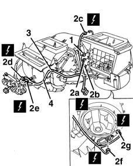
Applies to: all engines; all production periods
1. Undo the bolts.
2. Remove the inlet casing.
3. Undo the bolts.
4. Remove the cover.
5. Move the seal.
6. Undo the bolt.
7. Remove the evaporator unit.
8. Undo the bolt.
9. Disconnect the frost sensor cable from the retainer.
10. Remove the frost sensor from the evaporator.
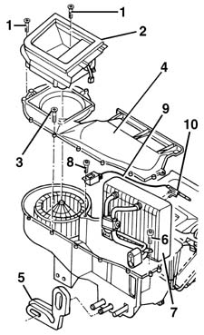
Applies to: all engines; all production periods
1. Undo the bolts.
2. Remove the pipe connector (2a), the lower seals (2b), the expansion valve (2c), the upper seals (2d) and the plate (2e) and recover the evaporator (2f).
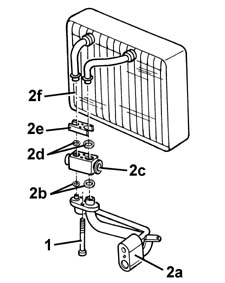
Applies to: all engines; all production periods
1. Undo the bolts.
2. Remove the air intake actuator.
3. Remove the rubber anti-vibration seals.
4. Working through the opening (4a), release the retainers (4b) and remove the lever (4c).
5. Extract the lever.
6. Extract the flap.
7. Recover the bush.
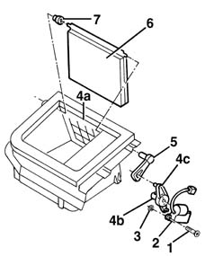
Applies to: all engines; all production periods
1. Undo the bolts.
2. Release the relay.
3. Remove the shield.
4. Undo the bolt.
5. Remove the plate (5a), the pipes (5b) and the seals (5c).
6. Extract the heater.
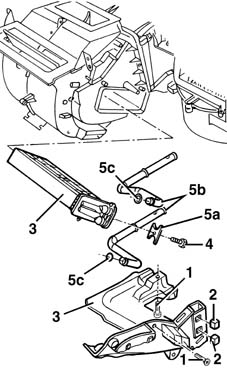
Applies to: all engines; all production periods
1. Disconnect the transmission cables (1a) from the retainers (1b).
2. Recover the controls mounting.
3. Undo the bolts.
4. Remove the heater casing.
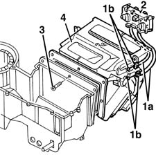
Applies to: all engines; all production periods
1. Lift up the retainer (1a) and remove the lever (1b).
2. Recover the cursor.
3. Undo the bolt and recover the washer.
4. Remove the lever.
5. Press the retainer (5a) in the direction of the arrow and remove the lever (5b).
6. Press the retainer (6a) in the direction of the arrow and remove the lever (6b).
7. Working through the opening (7a), release the retainer (7b) and remove the lever (7c).
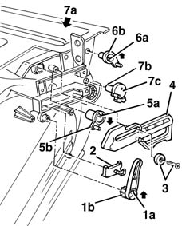
Applies to: all engines; all production periods
1. Undo the bolts.
2. Separate the two halves of the heater casing.
3. Recover the four flaps.
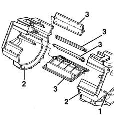
Applies to: all engines; all production periods
1. Undo the bolt.
2. Release the retainer.
3. Rotate the fan in an anti-clockwise direction and extract it.
4. If necessary, press the anti-vibration rubber mountings (4a) and separate the fan (4b) from the support (4c).
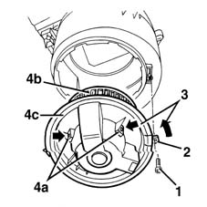
Applies to: all engines; all production periods
1. Undo the bolts.
2. Remove the resistance.
Applies to: all engines; all production periods
Reassembling
DismantlingCheck that the components are not damaged.
Position the resistance and fix it using the bolts.
If removed, insert the fan in its housing ensuring that the rubber anti-vibration mountings are fitted.
Insert the fan and turn it in a clockwise direction and fix it using the bolt.
Position the four flaps.
Join the two halves of the heater casing and fix them using the bolts.
1. Refit the lever (1a), making sure that the tooth (1c) engages in the notch (1b), then engage the retainer (1d) in the housing visible from the compartment (1e).
2. Refit the lever and engage the retainer.
3. Refit the lever and engage the retainer.
4. Position the lever (4a) returning the pins (4b, 4c, 4d) to their housings.
5. Position the washer and tighten the bolt.
6. Position the cursor.
7. Refit the lever and engage the retainer.
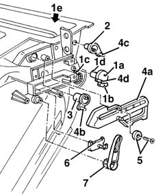
Applies to: all engines; all production periods
Position the heater casing and fix it using the bolts.
Position the controls mounting and connect the transmission cables to the retainers.
Insert the heater.
Position the new seals, the pipes and the plate on the heater and then fix them using the bolt.
Position the shield and fix it using the bolts
Secure the relay.
1. Position the bush.
2. Refit the flap.
3. Fit the lever in place.
4. Fit the lever (4a) in place, engaging the retainers (4b) in the housing visible from the compartment (4c).
5. Fit the new rubber anti-vibration seals on the actuator.
6. Position the air intake actuator. The actuator shaft must be correctly positioned in the lever housing.
7. Tighten the bolts.
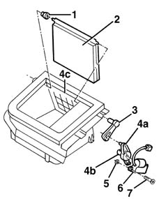
Applies to: all engines; all production periods
Position the plate, the new upper seals, the expansion valve, the new lower seals and the pipe connector on the evaporator pipes and fix them using the bolts.
Position the frost sensor on the evaporator.
Connect the cable for the frost sensor to the retainer.
Tighten the bolt.
Place the evaporator in the housing and tighten the bolt.
Position the seal.
Position the cover and fix it using the bolts.
Positin the inlet casing and fix it using the bolts.
Position the wiring.
Connect the electrical connections and secure the wiring using the retaining bands.
Topics linked from this page (8)
- G45 Air conditioner/heater control light
- H081 Climate control fan control ( AIR CONDITIONING )
- J34 Passenger compartment air fan 1 speed relay
- J35 Interior compartment air electric fan relay
- K86 Demister sensor
- N82 Air intake actuator
- N85 Passenger compartment ventilation fan
- O30 Air fan adjustment resistance